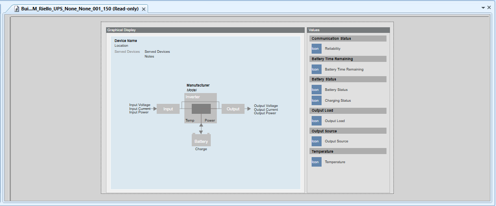
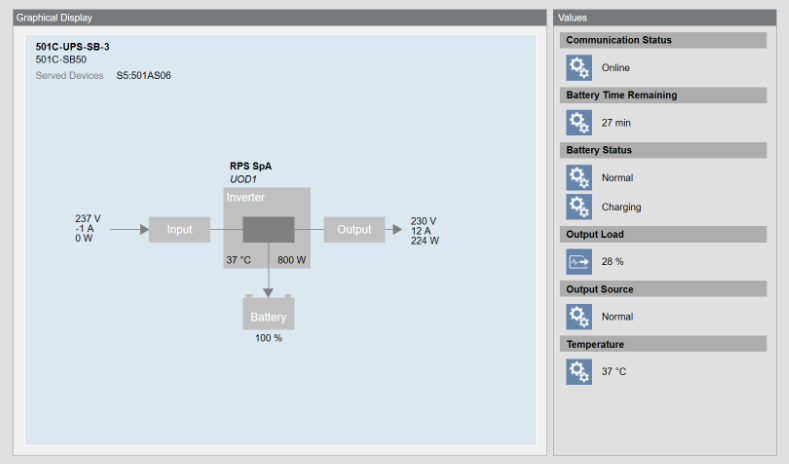

Riello UPS Graphic Templates
The following graphic template is provided with the installation of the Riello UPS extension.
TEM_Riello_UPS_None_None_001_150
In Engineering mode, the graphic template displays how Riello UPS properties are graphically represented.

In Operating mode, the Riello UPS data is graphically displayed as follows.
